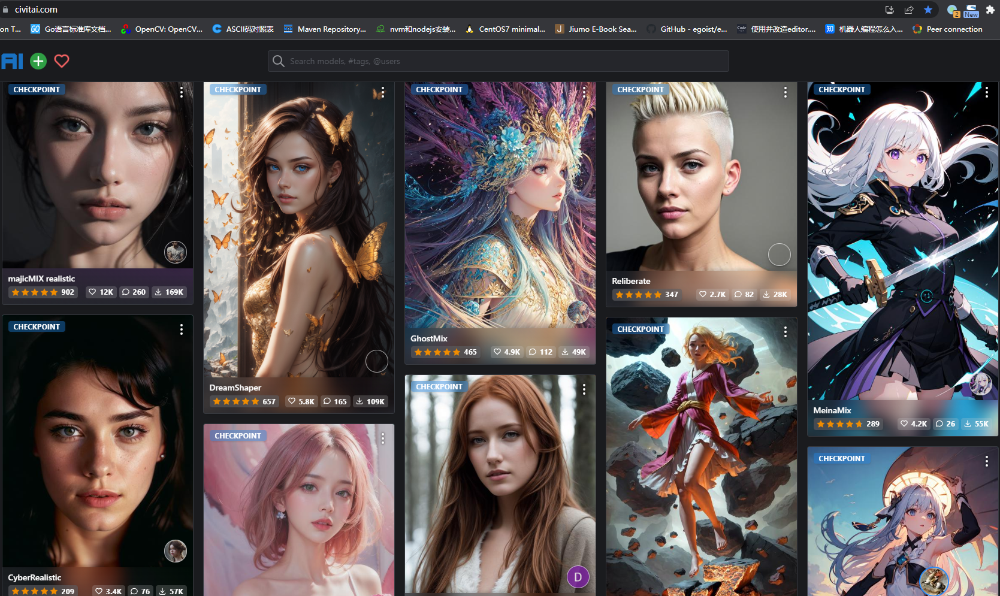
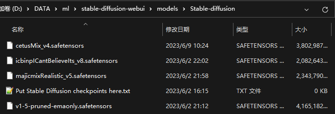
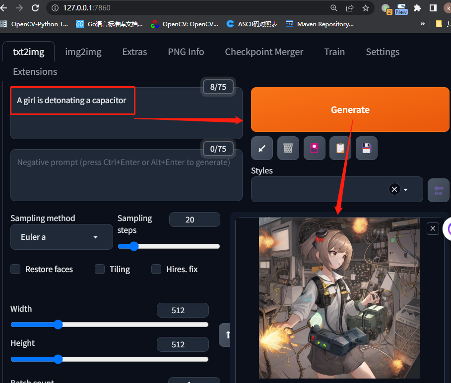

<!DOCTYPE lake>
<p data-lake-id="u83770bdf" id="u83770bdf" style="text-align: center"><br/></p><p data-lake-id="u476dc417" id="u476dc417" style="text-align: left"><span class="lake-fontsize-14" data-lake-id="u0380f866" id="u0380f866" style="color: rgb(34, 34, 34)">Stable Diffusion是一个文本到图像的潜在扩散模型，由CompVis、Stability AI和LAION的研究人员和工程师创建。它使用来自LAION-5B数据库子集的512x512图像进行训练。使用这个模型，可以生成包括人脸在内的任何图像，因为有开源的预训练模型，所以我们也可以在自己的机器上运行它。例如下面这张图就是由Stable Diffusion生成。</span></p><p data-lake-id="u7141df72" id="u7141df72" style="text-align: center"></p><p data-lake-id="uac8b2009" id="uac8b2009" style="text-align: center"><br/></p><p data-lake-id="u99110b68" id="u99110b68" style="text-align: left"><span data-lake-id="ubf10c028" id="ubf10c028">它的安装和使用都比较简单，我们在本地部署，只需要执行脚本，即可快速搭建它的环境。</span></p><h2 data-lake-id="M3pu2" id="M3pu2"><span data-lake-id="u3a4c05a2" id="u3a4c05a2">安装</span></h2><ol list="u17719b99"><li data-lake-id="ud354dcc0" fid="ua6e56c7b" id="ud354dcc0"><span data-lake-id="u23844145" id="u23844145">下载</span><span class="lake-fontsize-14" data-lake-id="ue70920f9" id="ue70920f9" style="color: rgb(34, 34, 34)">Stable Diffusion源码</span></li></ol><span class="yuque-card-unsupported">[codeblock]</span><ol list="ud920aa17" start="2"><li data-lake-id="u8c93c521" fid="u018f1dab" id="u8c93c521"><span class="lake-fontsize-14" data-lake-id="u49e0703f" id="u49e0703f">执行`webui-user.bat`</span></li><li data-lake-id="ue8ea61e5" fid="u018f1dab" id="ue8ea61e5"><span class="lake-fontsize-14" data-lake-id="ucfd9edf1" id="ucfd9edf1">使用虚拟目录中的pip安装依赖</span></li></ol><span class="yuque-card-unsupported">[codeblock]</span><p data-lake-id="u41bebad2" id="u41bebad2"><a data-lake-id="uc665fe64" href="https://www.bilibili.com/video/BV1Eh4y1R7tK/?vd_source=7f8db038f5b15fc65152acdd1a36198a" id="uc665fe64" rel="noopener noreferrer" target="_blank"><span class="lake-fontsize-14" data-lake-id="u7b058b15" id="u7b058b15">参考安装视频教程</span></a></p><p data-lake-id="u6a887bd8" id="u6a887bd8"><br/></p><h2 data-lake-id="RoLZb" id="RoLZb"><span data-lake-id="ub04c8945" id="ub04c8945">下载模型</span></h2><p data-lake-id="u285a2bcc" id="u285a2bcc"></p><p data-lake-id="u9e00ea65" id="u9e00ea65"><a data-lake-id="u13ed1e38" href="https://civitai.com/" id="u13ed1e38" rel="noopener noreferrer" target="_blank"><span data-lake-id="u1b22907b" id="u1b22907b">模型下载地址</span></a></p><p data-lake-id="u90a314fd" id="u90a314fd"><span data-lake-id="u0c18fd8c" id="u0c18fd8c">​</span><br/></p><h3 data-lake-id="ybyNs" id="ybyNs"><span data-lake-id="u301b6fc1" id="u301b6fc1">模型安装</span></h3><p data-lake-id="u14ee2d3c" id="u14ee2d3c"><span data-lake-id="u82702f59" id="u82702f59">将下载下来的模型,放到stable duffusion工程目录下的`stable-diffusion-webui\models\Stable-diffusion`文件夹中,例如我的目录如下:</span></p><p data-lake-id="u3d433d06" id="u3d433d06"></p><p data-lake-id="u42347af7" id="u42347af7"><br/></p><h2 data-lake-id="F3M9B" id="F3M9B"><span data-lake-id="u526e8613" id="u526e8613">启动测试</span></h2><ol list="uc5059a38"><li data-lake-id="u07c264f8" fid="u4f895024" id="u07c264f8"><span data-lake-id="u4bfbcab9" id="u4bfbcab9">在命令行中，执行</span><code data-lake-id="ue79a37e5" id="ue79a37e5"><span data-lake-id="u0a7ab167" id="u0a7ab167">webui-user.bat</span></code></li><li data-lake-id="ued8bfd2f" fid="u4f895024" id="ued8bfd2f"><span data-lake-id="u9b4e6cbb" id="u9b4e6cbb">启动成功之后，在浏览器中打开连接：http://127.0.0.1:7860</span></li><li data-lake-id="u537a1704" fid="u4f895024" id="u537a1704"><span data-lake-id="u3c89f2fb" id="u3c89f2fb">参考演示链接：</span><a data-lake-id="u6e6d0a0b" href="https://www.bilibili.com/video/BV1Eh4y1R7tK/?vd_source=7f8db038f5b15fc65152acdd1a36198a" id="u6e6d0a0b" rel="noopener noreferrer" target="_blank"><span data-lake-id="u03c9d34f" id="u03c9d34f">https://www.bilibili.com/video/BV1Eh4y1R7tK/?vd_source=7f8db038f5b15fc65152acdd1a36198a</span></a></li></ol><p data-lake-id="ua4b5dfea" id="ua4b5dfea"><span data-lake-id="ue700c9c1" id="ue700c9c1">​</span><br/></p><p data-lake-id="ubcf06e1c" id="ubcf06e1c"></p><p data-lake-id="u5ea24d7b" id="u5ea24d7b"><span data-lake-id="ub6aedfe9" id="ub6aedfe9">​</span><br/></p>